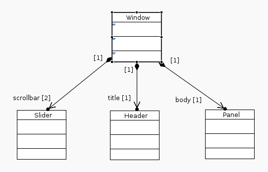
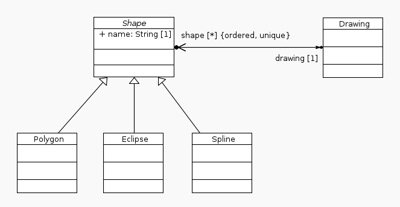
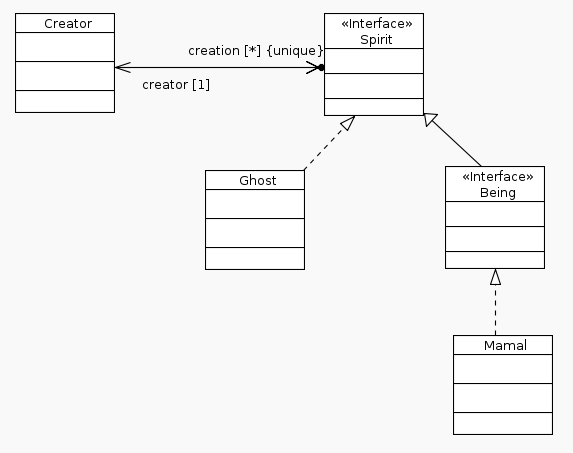
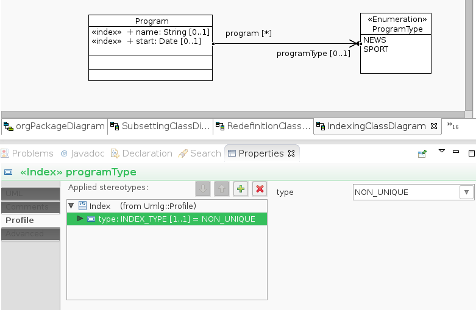
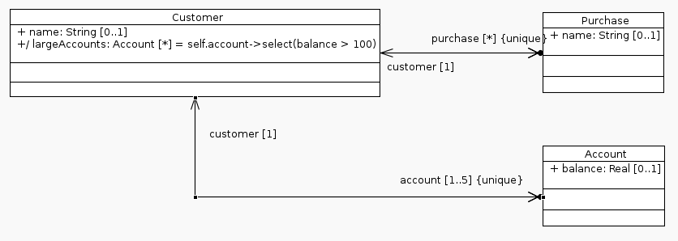

UMLG In Action
This section explains UMLG's primary interface org.umlg.runtime.adaptor.UmlgGraph.
UmlgGraph extends both com.tinkerpop.blueprints.TransactionalGraph and com.tinkerpop.blueprints.KeyIndexableGraph.
UmlgGraph follows the singleton pattern and is always available on the current thread. To access it call the static
method org.umlg.runtime.adaptor.UMLG.get().
Some important methods on UmlgGraph are,
<T extends PersistentObject> T getEntity(Object id);
<T extends PersistentObject> T getFromUniqueIndex(String key, Object value);
<T extends PersistentObject> List<T> getFromIndex(String key, Object value);
String executeQueryToString(UmlgQueryEnum umlgQueryEnum, Object contextId, String query);
Object executeQuery(UmlgQueryEnum umlgQueryEnum, Object contextId, String query);
getEntity retrieves an entity from the db given its vertex id.
getFromUniqueIndex retrieves an entity that has been uniquely indexed for a key and value of one of is properties.
The key is the qualified name of the property.
getFromIndex is the same as getFromUniqueIndex except that the index is not unique and thus returns a List
executeQueryToString executes a query and returns the result as a String. UmlgQueryEnum can be OCL, GROOVY or NATIVE,
UmlgQueryEnum.GROOVY includes Gremlin queries.
executeQuery executes a query returning the raw result. In the case of OCL the raw result will be your entities.
There are many ways to get access to your entities.
UMLG generates a class that represents the model. It is a singleton and gives you access to the root objects of the model. Root objects are classes that have no composite parent. A composite parent is a class at the other end of a composite association.

Window is a root object as it does not have a composite parent. As such it is accessible from the model class Quickpreview.
Slider, Header and Panel have Window as its composite parent.
@Test
public void testRootEntities() {
Window window1 = new Window();
Slider slider1_1 = new Slider(window1);
Slider slider1_2 = new Slider(window1);
Header header1 = new Header(window1);
Panel panel1 = new Panel(window1);
Window window2 = new Window();
Slider slider2_1 = new Slider(window2);
Slider slider2_2 = new Slider(window2);
Header header2 = new Header(window2);
Panel panel2 = new Panel(window2);
db.commit();
//All root object are accessible from the class that represents the model.
Assert.assertEquals(2, Quickpreview.INSTANCE.getWindow().size());
}
All concrete instances of an abstract or concrete entity can be accessed via the static allInstances method on the class.

@Test
public void testAllInstances() {
Drawing drawing1 = new Drawing();
Polygon polygon1 = new Polygon();
polygon1.setDrawing(drawing1);
Polygon polygon2 = new Polygon();
polygon2.setDrawing(drawing1);
Eclipse eclipse1 = new Eclipse();
eclipse1.setDrawing(drawing1);
Spline spline1 = new Spline();
spline1.setDrawing(drawing1);
Spline spline2 = new Spline();
spline2.setDrawing(drawing1);
Spline spline3 = new Spline();
spline3.setDrawing(drawing1);
db.commit();
Assert.assertEquals(1, Drawing.allInstances().size());
Assert.assertEquals(6, Shape.allInstances().size());
Assert.assertEquals(2, Polygon.allInstances().size());
Assert.assertEquals(1, Eclipse.allInstances().size());
Assert.assertEquals(3, Spline.allInstances().size());
}
All concrete instances of an interface can be accessed via the static getAllInstances method on the class's metaclass.
Every interface and class in the UML model has a corresponding meta class generated. The meta class's name is class's
name with 'meta appended' to it. The meta class is a singleton and access by its corresponding static getInstance method.

@Test
public void testInterfaceAllInstances() {
Creator creator = new Creator();
Ghost ghost1 = new Ghost();
ghost1.setCreator(creator);
Ghost ghost2 = new Ghost();
ghost2.setCreator(creator);
Mamal mamal1 = new Mamal();
mamal1.setCreator(creator);
Mamal mamal2 = new Mamal();
mamal2.setCreator(creator);
Mamal mamal3 = new Mamal();
mamal3.setCreator(creator);
db.commit();
Assert.assertEquals(5, SpiritMeta.getInstance().getAllInstances().size());
Assert.assertEquals(3, BeingMeta.getInstance().getAllInstances().size());
}
Umlg makes extensive use of blueprint's indexing mechanism to implement UML qualifiers. Qualifier's make use of blueprints indexing mechanism but the indexed value is always in the context of an owning class. Have a look at the UMLG Reference page for details.
UMLG also supports global indexing. Global indexing is the standard blueprints indexing mechanism where any vertex or edge property is indexed and can be retrieved via the index. This is a concept that is not present in UML.
To do this UMLG uses a stereotype to mark any datatype (a primitive or one of UMLG's build in data types) property to be indexed. The index stereotype has one property to specify whether the index is a unique index or not. A unique index will enforce that the value of the property is unique across the whole graph. A non-unique index may contain duplicates.

For every stereotype indexed property UMLG generates a corresponding static finder method in the owning class.
The finder method's name is finderByXXX where XXX is the name of the property.
The example below illustrates the finder methods on Program.
@Test(expected = IllegalStateException.class)
public void testUniqueIndexing() {
Program program1 = new Program();
program1.setName("Program1");
db.commit();
//This will fail as name has a unique index specified on it.
Program program2 = new Program();
program2.setName("Program1");
db.commit();
}
@Test
public void testIndexing() {
for (int i = 0; i < 1000; i++) {
Program program1 = new Program();
program1.setName("Program" + i);
}
db.commit();
Assert.assertNotNull(Program.findByName("Program1"));
Assert.assertNotNull(Program.findByName("Program500"));
Assert.assertNotNull(Program.findByName("Program999"));
}
@Test
public void testNonUniqueIndexing() {
LocalDate now = LocalDate.now();
Program program1 = new Program();
program1.setStart(now);
Program program2 = new Program();
program2.setStart(now);
Program program3 = new Program();
program3.setStart(now);
LocalDate tomorrow = now.plusDays(1);
Program program4 = new Program();
program4.setStart(tomorrow);
Program program5 = new Program();
program5.setStart(tomorrow);
db.commit();
Assert.assertEquals(3, Program.findByStart(now).size());
Assert.assertEquals(2, Program.findByStart(tomorrow).size());
}
@Test
public void testNonUniqueEnumIndex() {
Program program1 = new Program();
program1.setProgramType(ProgramType.NEWS);
Program program2 = new Program();
program2.setProgramType(ProgramType.NEWS);
Program program3 = new Program();
program3.setProgramType(ProgramType.NEWS);
Program program4 = new Program();
program4.setProgramType(ProgramType.SPORT);
Program program5 = new Program();
program5.setProgramType(ProgramType.SPORT);
db.commit();
Assert.assertEquals(3, Program.findByProgramType(ProgramType.NEWS).size());
Assert.assertEquals(2, Program.findByProgramType(ProgramType.SPORT).size());
}
Queries can be executed in OCL, Gremlin/Groovy and in the case of Neo4j, Cypher.
All queries are executed via UMLG's primary graph interface. UMLG.get().executeQuery(UmlgQueryEnum umlgQueryEnum, Object contextId, String query)
UmlgQueryEnum is one of OCL, GROOVY, NATIVE
The contextId can be either a UMLG entity, a vertex id or the fully qualified name of a entity.
UMLG supports UML's OCL language. It can be used at design time in the model to specify constraints, default values, derived properties and query operations.
It can also be used runtime to query the graph in an object-oriented manner. Any ocl expression can be evaluated against the system at runtime.

@Test
public void testOcl() {
Customer customer = new Customer();
customer.setName("john");
Purchase car1 = new Purchase();
car1.setName("bmw");
customer.addToPurchase(car1);
Purchase car2 = new Purchase();
car2.setName("merc");
customer.addToPurchase(car2);
Account account1 = new Account();
account1.setBalance(1000D);
customer.addToAccount(account1);
Account account2 = new Account();
account2.setBalance(10D);
customer.addToAccount(account2);
db.commit();
//derived property largeAccounts is generated as a getter on the entity
Assert.assertEquals(1, customer.getLargeAccounts().size());
Set<Purchase> cars = db.executeQuery(
UmlgQueryEnum.OCL,
customer,
"self.purchase"
);
Assert.assertEquals(2, cars.size());
Set<Account> large = db.executeQuery(
UmlgQueryEnum.OCL,
customer,
"self.account->select(balance > 100)"
);
Assert.assertEquals(1, large.size());
Assert.assertEquals(1000D, large.iterator().next().getBalance(), 0);
Set<Account> small = db.executeQuery(
UmlgQueryEnum.OCL,
customer,
"self.account->select(balance < 100)"
);
Assert.assertEquals(1, small.size());
Assert.assertEquals(10D, small.iterator().next().getBalance(), 0);
}
Please see the OCL Reference guide for further details.
UMLG supports the execution of groovy and gremlin scripts.
@Test
public void testGremlin() {
Customer customer = new Customer();
customer.setName("john");
Purchase car1 = new Purchase();
car1.setName("bmw");
customer.addToPurchase(car1);
Purchase car2 = new Purchase();
car2.setName("merc");
customer.addToPurchase(car2);
Account account1 = new Account();
account1.setBalance(1000D);
customer.addToAccount(account1);
Account account2 = new Account();
account2.setBalance(10D);
customer.addToAccount(account2);
db.commit();
//'self' translates to g.V(id) where id is the customers id
Assert.assertEquals("john", db.executeQuery(UmlgQueryEnum.GROOVY, customer, "self.name"));
Object result = db.executeQuery(UmlgQueryEnum.GROOVY, customer, "self.both.has('name').name");
Assert.assertTrue(result instanceof Pipeline);
List<String> names = new ArrayList();
for (String name : (Pipeline<Object, String>)result) {
names.add(name);
}
Assert.assertEquals(2, names.size());
Assert.assertTrue(names.contains("merc"));
Assert.assertTrue(names.contains("merc"));
}